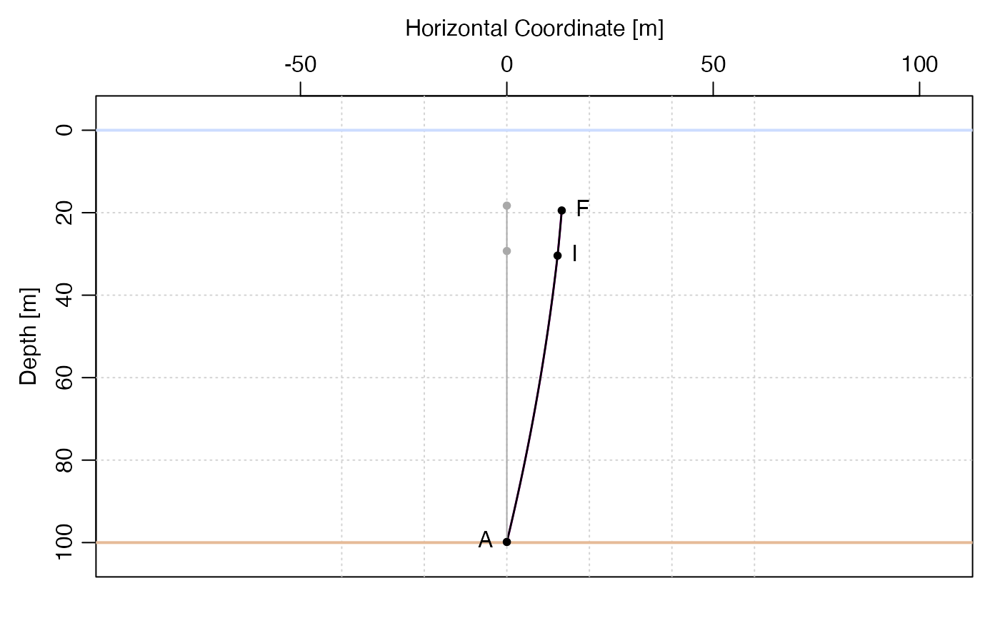

The mooring package provides functions for working with oceanographic moorings.
mooring(...)
| ... | two or more elementary objects, e.g. as created by |
|---|
Dan Kelley
library(mooring) # Illustrate the deformation of a 100-m mooring in a 0.5 m/s # (roughly 1 knot) current. Buoyancy is provided with a float # of diameter 20 inches. m <- mooring(anchor(depth=120), wire(length=100), float("HMB 20")) par(mfrow=c(1, 3)) plot(m) # Must discretise the wire portion to resolve the shape. md <- discretise(m) mdk <- knockdown(md, u=0.5) plot(mdk) library(mooring) m <- mooring(anchor(depth=100), wire(length=80), float("HMB 20")) print(m)#> [[1]] #> $type #> [1] "anchor" #> #> $model #> [1] "default" #> #> $source #> [1] "Kelley" #> #> $buoyancy #> [1] -1000 #> #> $height #> [1] 0 #> #> $depth #> [1] 100 #> #> $x #> [1] 0 #> #> $z #> [1] -100 #> #> $T #> [1] 24.1 #> #> attr(,"class") #> [1] "mooring" "anchor" #> #> [[2]] #> $type #> [1] "wire" #> #> $model #> [1] "1/4 wire/jack" #> #> $source #> [1] "Dewey" #> #> $buoyancy #> [1] -0.13 #> #> $height #> [1] 80 #> #> $width #> [1] 0.008 #> #> $CD #> [1] 1.3 #> #> $x #> [1] 0 #> #> $z #> [1] -20 #> #> $T #> [1] 24.1 #> #> attr(,"class") #> [1] "mooring" "wire" #> #> [[3]] #> $type #> [1] "float" #> #> $model #> [1] "HMB 20" #> #> $source #> [1] "Kelley" #> #> $buoyancy #> [1] 34.5 #> #> $height #> [1] 0.508 #> #> $diameter #> [1] 0.508 #> #> $CD #> [1] 0.65 #> #> $x #> [1] 0 #> #> $z #> [1] -19.492 #> #> $T #> [1] 34.5 #> #> attr(,"class") #> [1] "mooring" "float" #> #> attr(,"class") #> [1] "mooring"